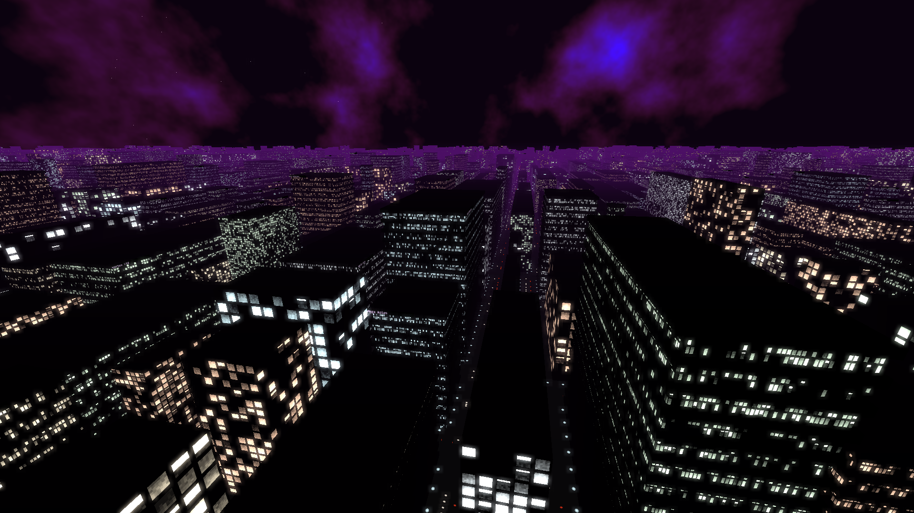

These are little pet projects I had over the years. (At least those that are available on GitHub.) The topics are ranging from computer graphics to emulation. They are in varying state of completion (as most pet projects tend to do).
A procedural city generator written in C# using OpenGL 3.3.
Some keywords:
A WP7 inspired launcher for Android written in Xamarin.
A simple file renamer tool to fix filenames in old hungarian RPGMaker2000 games.
Nes emulator written in C#
A fun little tool written on a boring afternoon. It translates a Brainfuck program code to .NET IL code. The output is a runnable executable.
An object oriented XCP (Universal Measurement and Calibration Protocol) implementation. The protocol itself is used by companies in the automotive industry to do measurements and calibrations on ECUs in cars. Written in C++. Most of the mandatory commands are supported (although not every single one).
This was meant to be my MSc thesis, but unfortunatelly it was never fully realized. And wasnt tested on real hardware, only on a simulator.
In spite of this the repository has 80+ stars on GitHub.
A Mandelbrot fractal renderer written in OpenGL and GLSL.
A little webgl experiment. Features batched sprite rendering and sprite animation.